Winston深深
从一支竹笛、一首老歌里走出来的温柔台柱——以稳健的主持和真诚的分享，串起北航头马一场又一场的相聚。
会员活跃 2015–2017出现 14 次 · 14 篇2 场演讲
Winston，俱乐部里大家亲切地叫他"深深"，是北航头马 2015 至 2017 那段黄金岁月里最熟悉的面孔之一。2015 年春天，他在第 95 次"Speech Marathon"上完成了自己的破冰演讲《Seeing is not always believing》，用魔术、蓝黑白金裙的视觉错觉，向大家抛出"眼见未必为实"的疑问，正式踏上头马旅程。
很快，他从台上的讲者成长为台前幕后的多面手。无论是 Career Planning、Choice、Almost，还是 Ode to Joy、Resolution、Memory of 2017，一场场例会的主持席上总能看到 Winston 沉稳的身影；他也做过即兴主持(TTM)、点评官、计时员，2016 年春季比赛更担纲即兴演讲环节的比赛主席(Contest Chair)，抛出"AlphaGo 与人工智能是否会威胁人类"这样的犀利议题，把全场的思辨气氛点燃。
性格里，深深是个含蓄又有舞台魂的人。圣诞晚会上，平日羞于登台的他鼓起勇气唱了《一生有你》，完成人生第一次舞台首秀，从拘谨到带动全场合唱；他也曾抱着管玥儿伴奏、苦练几天竹笛上台献上《深海少女》。纪要里调侃他"被曝在医院养病期间与女护士传出绝美爱恋"，足见他在伙伴心中是被温柔记挂的一员。他对"diary 如沉默的好友，能分担忧愁、加倍快乐"的体悟，也透着一个安静而细腻的人。
完整足迹 · 14 次出现（点开，每条可跳转原文）
- 2015-05-14第95次 · 做备稿演讲Seeing is not always believing
- 2015-07-16第104次 · 担任即兴演讲主持
- 2015-08-19第106次 · 担任计时员
- 2015-08-21第107次 · 担任本次会议Toastmaster主持
- 2015-11-17第118次 · 点评Andy的演讲
- 2016-01-01第124次 · 黑黑环节出现(浪 Winston)
- 2016-03-04第127次 · 担任本次会议TM主持人
- 2016-03-10第128次 · 担任2016春季比赛即兴演讲Contest Chair
- 2016-03-16第128次 · 担任2016春季比赛Table Topic Contest Chair
- 2016-09-22第153次 · 预告担任即兴演讲主持人
- 2016-12-17第163次 · 预告担任163次联合会议总主持人
- 2017-01-06第164次 · 演唱一生有你，完成舞台首秀
- 2017-06-01第175次 · 担任会议主持人(Toastmaster)
- 2017-12-15第187次 · 做备稿演讲（关于日记/回忆2017）
闯关之路 · Competent Communication
✓
CC1
破冰
CC2
组织你的演讲
CC3
明确目标
CC4
怎么说
CC5
肢体在说话
CC6
声音的变化
CC7
研究你的主题
CC8
善用视觉辅助
CC9
以理服人
CC10
激励听众
做过的演讲 · 2 场
破冰演讲。借魔术表演、蓝黑白金裙争议与错觉图片，发问'眼见是否为实'。
把日记比作沉默的好友：愤怒、迷茫时可倾诉，快乐时记录可延续幸福，能分担忧愁、加倍快乐。
担任过的会议角色
Toastmaster(主持)×5Table Topics Master(即兴主持TTM)Evaluator(点评官)Timer(计时员)
里程碑
为俱乐部做的事
- 长期担任例会主持(Toastmaster)，稳定支撑多场会议流程
- 出任2016春季比赛即兴演讲环节比赛主席，设计'AI是否威胁人类'等思辨议题
- 承担点评官、计时员、即兴主持等多种职能角色
- 在圣诞晚会、元旦趴等活动中以歌曲、竹笛表演活跃俱乐部氛围
头马里的人
TA 点评过
Andy照片墙 · 时间线
共 30 帧，其中 28 帧已用人脸识别确认是本人（带 ✓）。
 ✓
✓ ✓
✓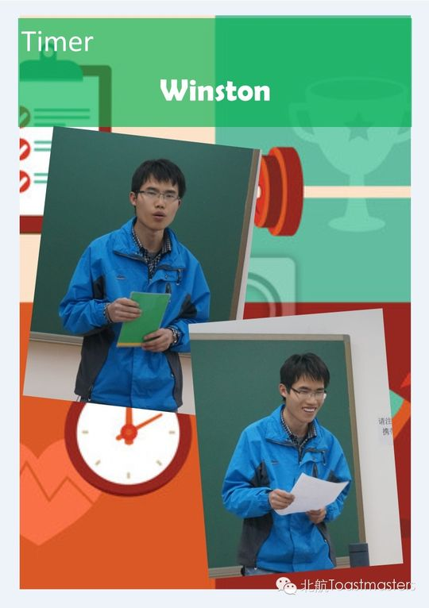
✓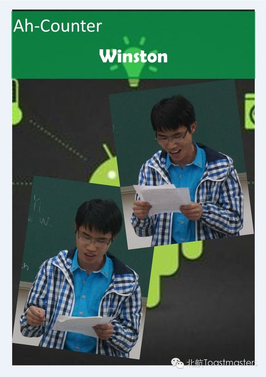
✓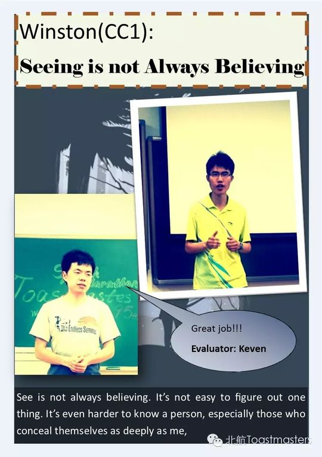
✓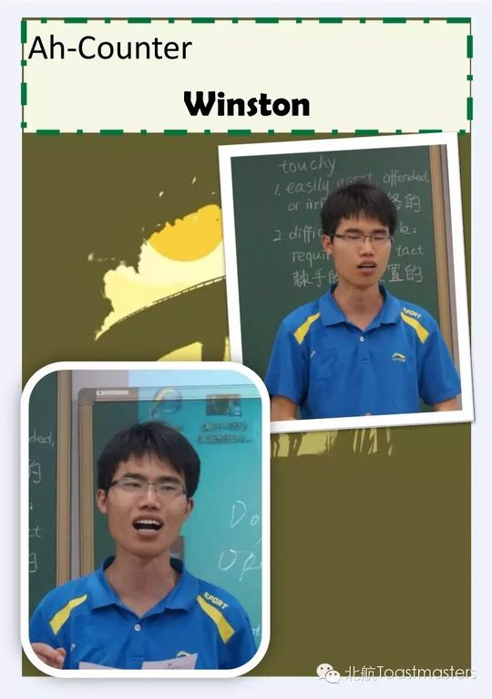
✓ ✓
✓ ✓
✓ ✓
✓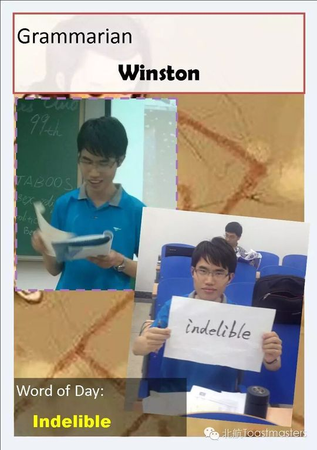
✓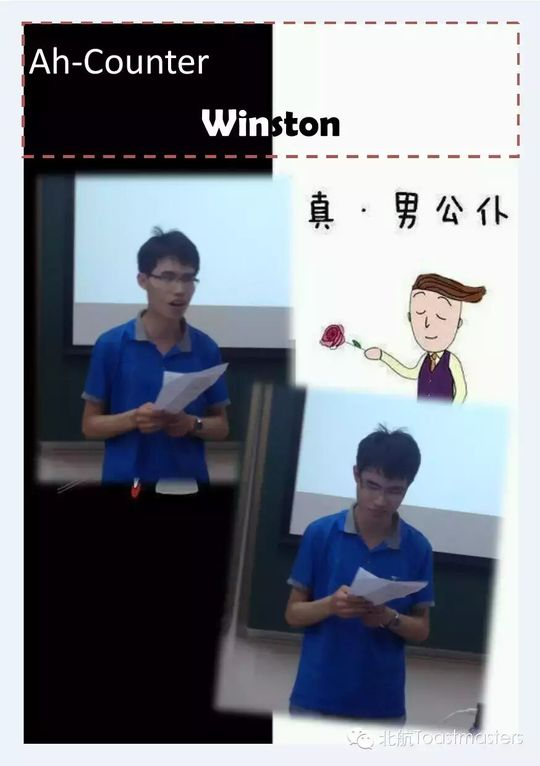
✓ ✓
✓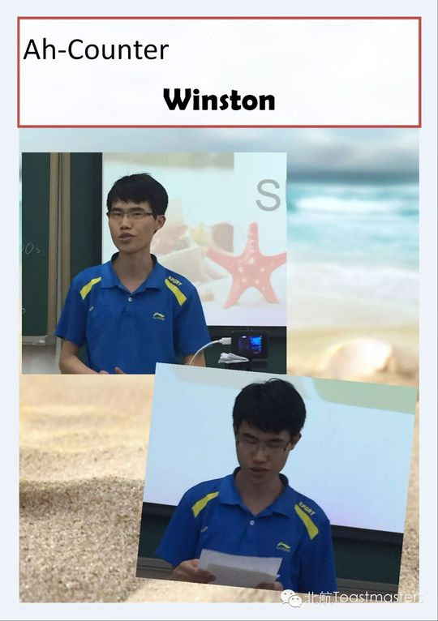
✓ ✓
✓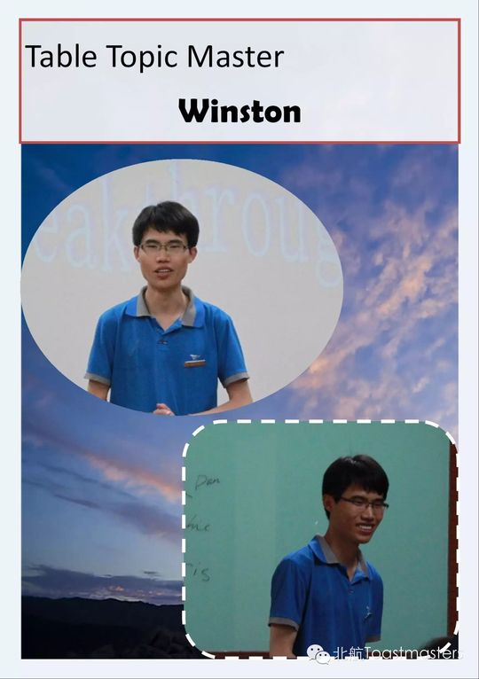
✓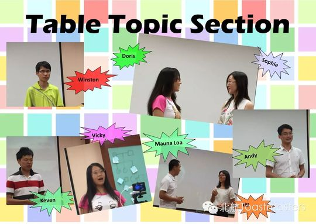
✓ ✓
✓ ✓
✓ ✓
✓ ✓
✓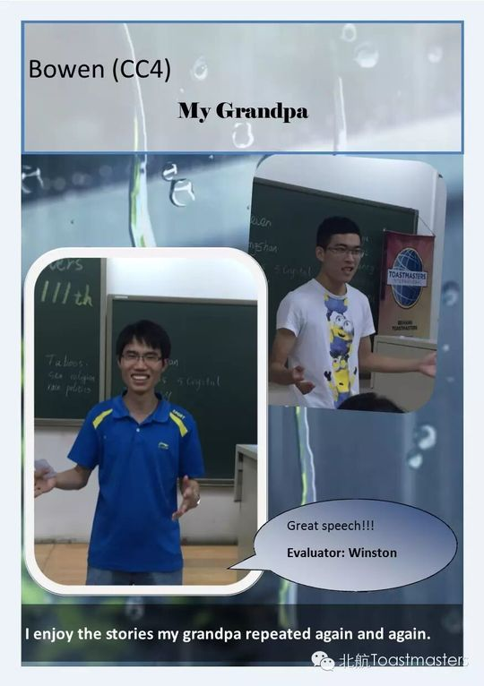
✓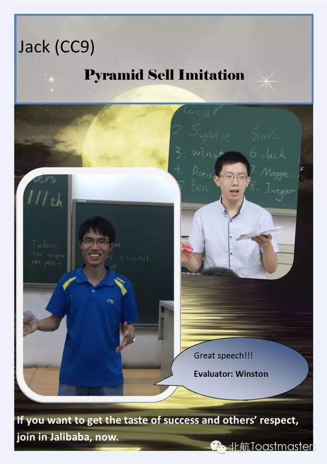
✓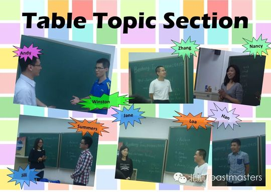
✓ ✓
✓ ✓
✓ ✓
✓ ✓
✓

“A diary is a good friend of silence, whether you are in anger, ecstasy, sad, confused or not, you can regard the diary as a friend to share your mind. She is just a friend who can halve sorrow and double happiness.”